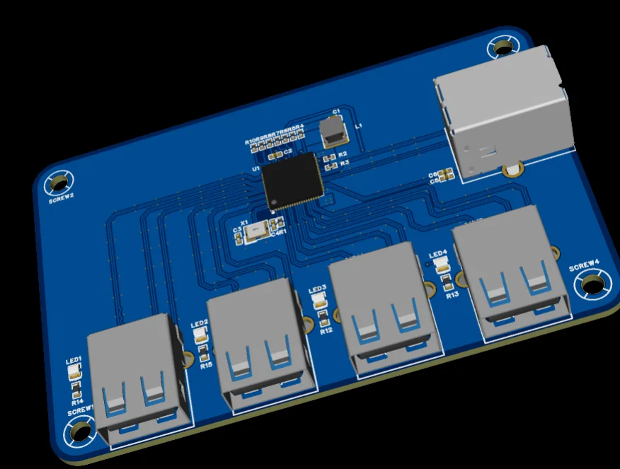
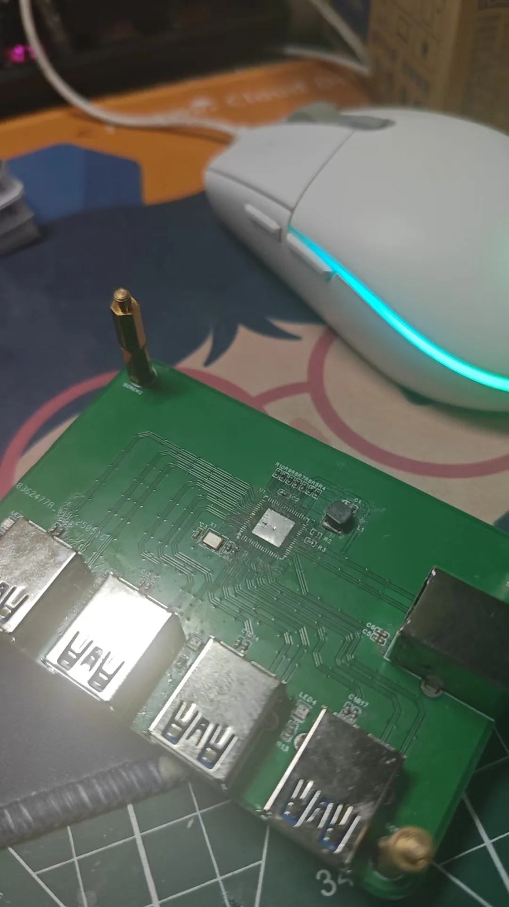
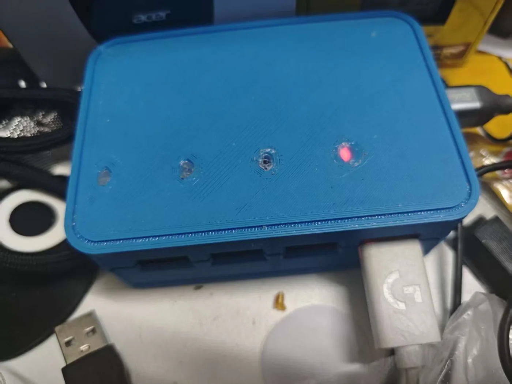

USB3.0 拓展坞
1 进 4 出，单电源 5V，手焊样板。板子不大，但从电源树到差分对全靠自己排。


② PCB 背面
③ 四口同时测速截图

问题
USB3.0 跑 5 Gbps，差分对走错一点就掉速、掉盘。我想亲手验证一遍高速信号到底有多挑布局。
方案
- 基于 VL812 做主控，完成 1 路输入、4 路输出的 PCB 布局布线。
- 高速差分对做等长与阻抗控制，重点处理回流路径，避免跨分割。
- 电源部分落地单电源 5V 方案，板内生成 3.3V 与 1.2V，按负载分区布置去耦。
结果
- 完成样机焊接与整机调试，四口同时工作稳定。
- 验证了高速差分信号在本板叠层与走线条件下的稳定输入输出。
最难的一步
样机第一次上电，测到的电压不对，USB 口一个设备都不认。逐个焊点复查，发现是虚焊，重新补焊之后才恢复正常。